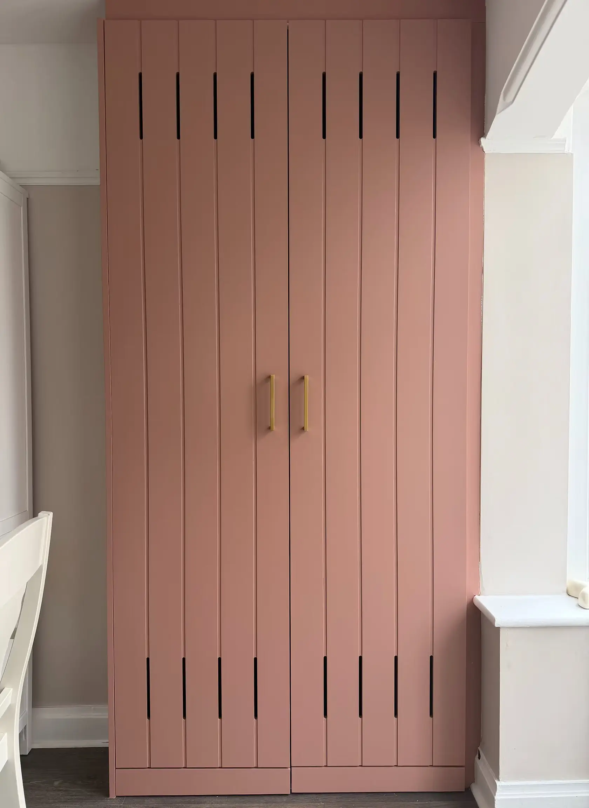
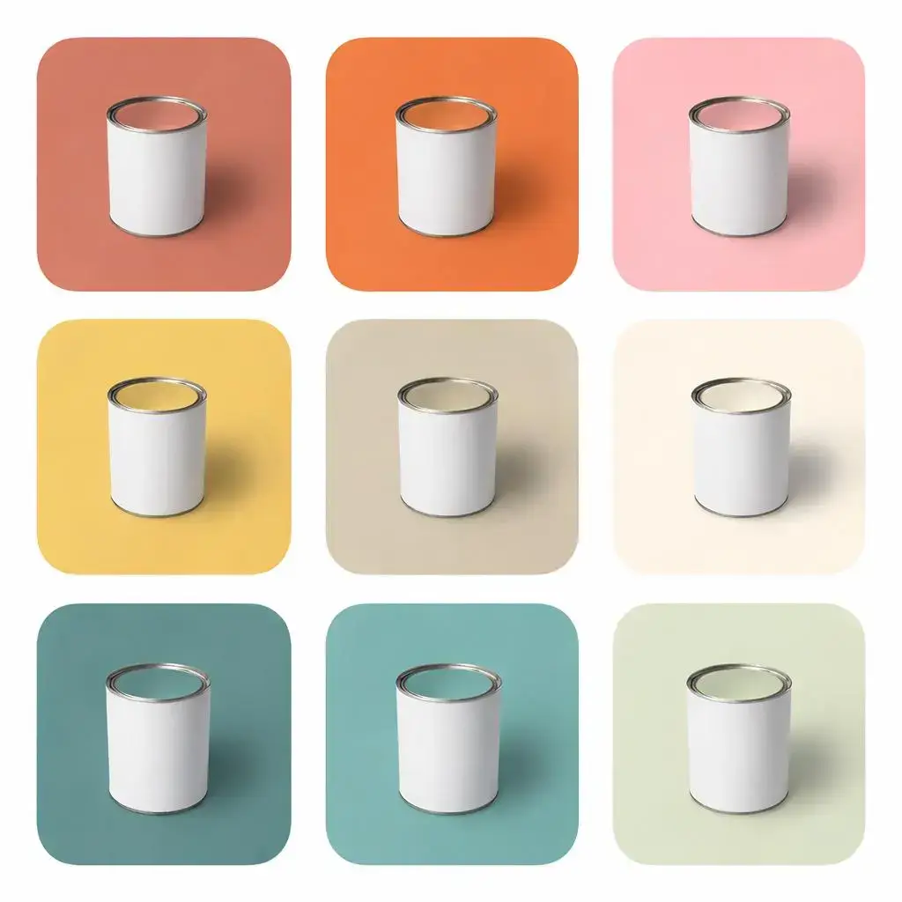

Furniture & Wardrobe
Transformations.
Breathe new life into your fitted bedrooms, media walls, and freestanding furniture with a flawless, factory-grade finish.
Don't Replace it. Respray it.
High-quality furniture and fitted wardrobes are an investment. If they are structurally sound but look outdated or don't match your current décor, replacing them is costly and disruptive.
At Chameleon • Spray Painting Co., our professional furniture respraying service provides a cost-effective alternative. We apply highly durable, specialist coatings that deliver a smooth, even finish with zero brush marks—transforming old wood, MDF, laminate, or previously painted surfaces into stunning, modern statement pieces.
Fitted Wardrobes & Bedrooms
Fitted bedroom furniture is incredibly practical, but older installations can make a room feel dark and dated. Our wardrobe respray service completely revitalises your bedroom aesthetics without the mess of ripping out solid cabinets.
We meticulously remove all doors, drawer fronts, and plinths to spray them in our controlled workshop, ensuring a dust-free, perfect finish. The fixed carcasses and framing are then carefully masked and sprayed on-site to match seamlessly.
We can also fill existing handle holes if you wish to upgrade to new, modern hardware during the respray process.

Bespoke Media Walls
& Interior Joinery
Media Walls & Interior Joinery
Custom-built media walls, shelving units, and alcove cabinets are striking additions to any living room. If you've had custom MDF or joinery installed, hand-painting it can ruin the bespoke feel with visible brush strokes.
Our spray finishes elevate custom carpentry, providing the sleek, uniform look you'd expect from high-end retail furniture. We provide on-site spraying for fixed units, meticulously protecting your walls, floors, and electronics during the process.
We frequently spray:
- Bespoke MDF media walls and shelving
- Alcove cupboards and fireplace surrounds
- Dining tables, sideboards, and freestanding pieces
Interior Doors & Skirting
Yellowing woodwork can quickly age a freshly decorated room. If you are updating your kitchen or living space, why stop at the cabinets?
We can professionally respray all interior doors, skirting boards, architraves, and stair spindles to match your new aesthetic. Whether you want a crisp, bright white to freshen up a hallway, or a bold, contrasting dark tone for modern interior doors, our durable coatings ensure they resist scuffs and daily wear.
Interior Doors &
Architectural Woodwork
How We Work
Achieving a factory finish on furniture requires meticulous preparation and the right environment.
Assessment & Collection
We assess the material (MDF, solid wood, laminate) to determine the correct primers. Removable items like doors and drawers are taken back to our Cross Hills workshop.
Extensive Preparation
Surfaces are deeply degreased, sanded, and keyed. Any imperfections, scratches, or old handle holes are expertly filled and smoothed before the primer is applied.
Precision Spraying
Using professional HVLP/Airless systems, we apply multiple fine coats of your chosen colour. Once fully cured, items are carefully wrapped, returned, and re-fitted.
Endless Colour Possibilities
Furniture is personal. Whether you want a statement piece in a bold hue or to blend built-in wardrobes seamlessly into your wall colour, we have you covered.
- Full RAL & British Standard matching
- Designer paint matching (e.g., Farrow & Ball)
- Available in Matt, Satin, Gloss, or Metallic finishes

Ready to Update Your Furniture?
Send us a few photos of your wardrobes, media wall, or interior doors, and we'll provide a fast, comprehensive quote to transform them.